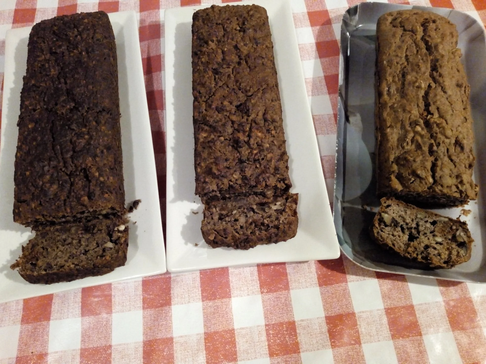
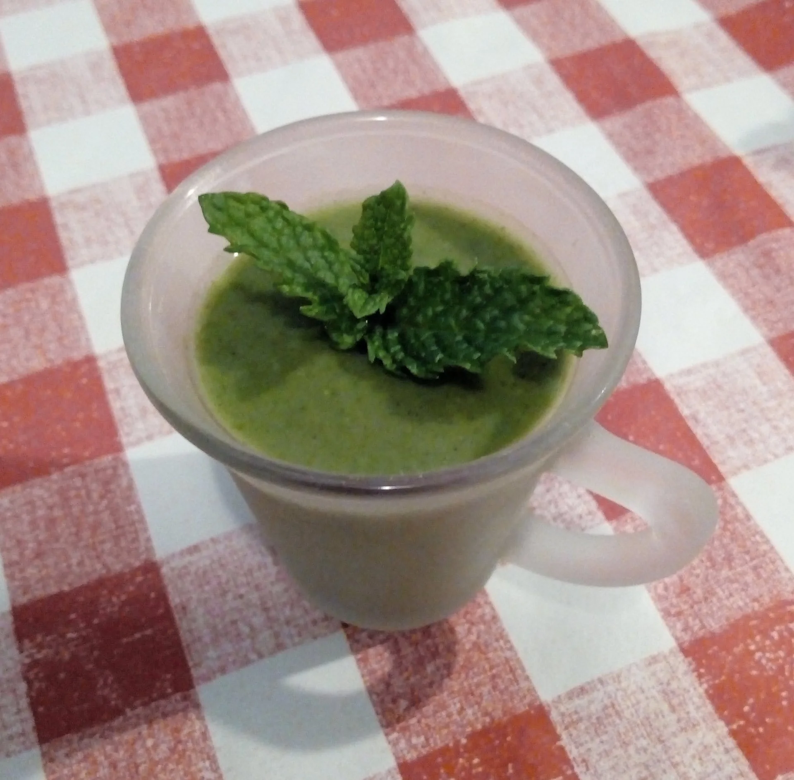
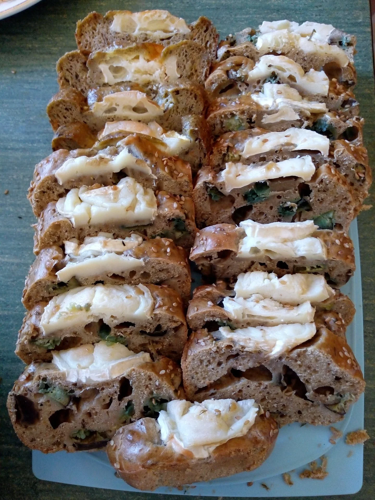
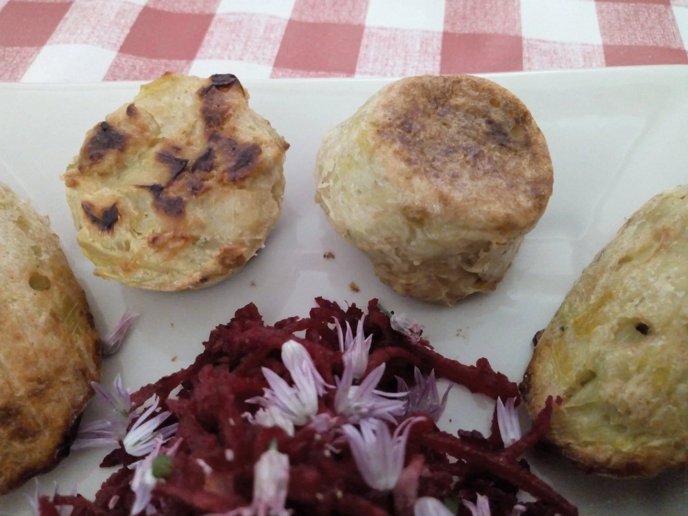
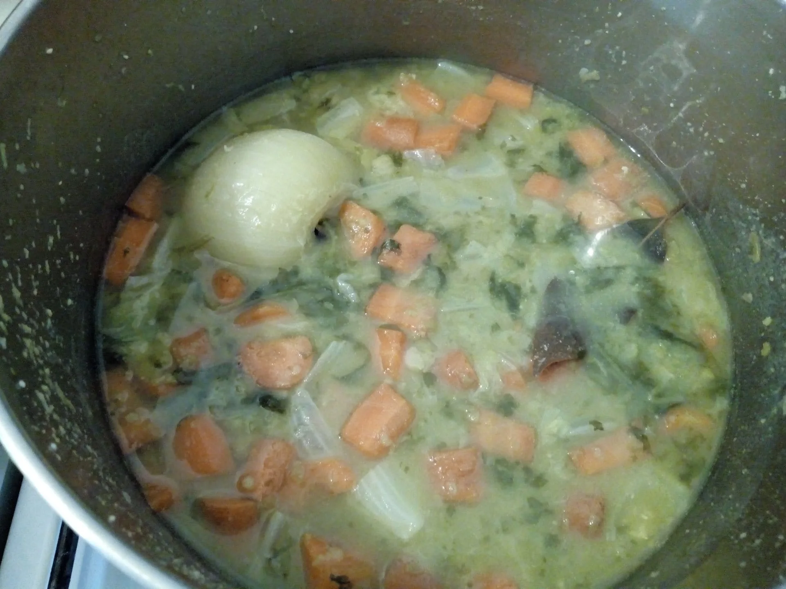
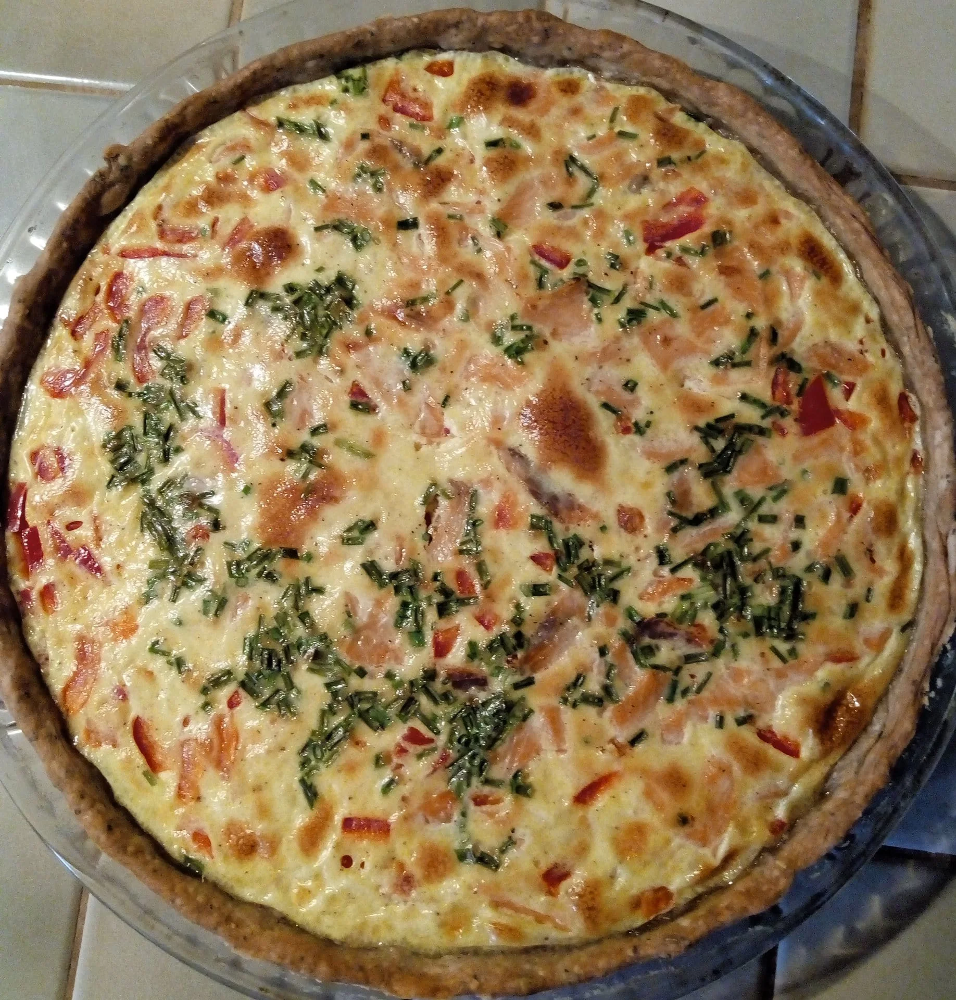
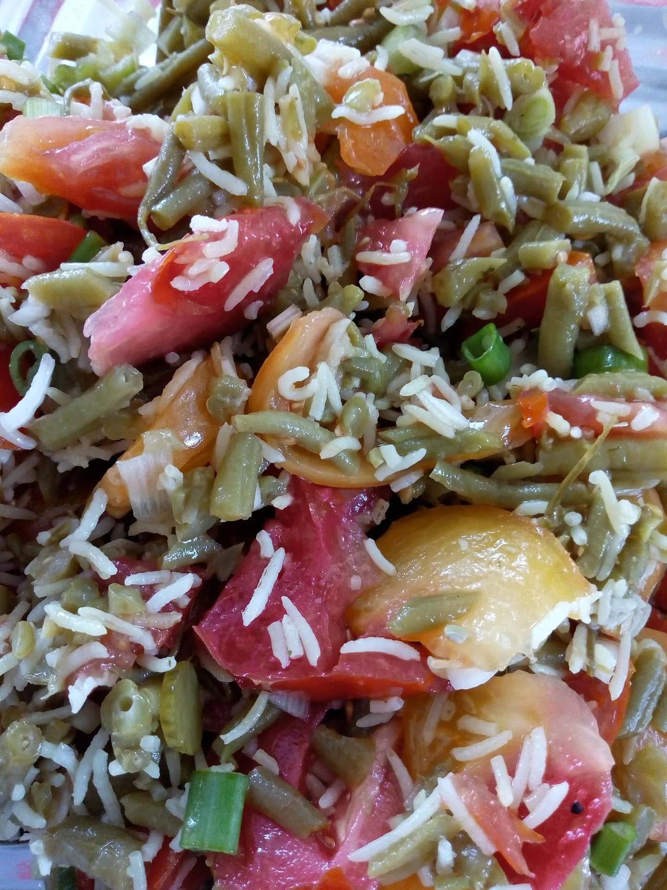
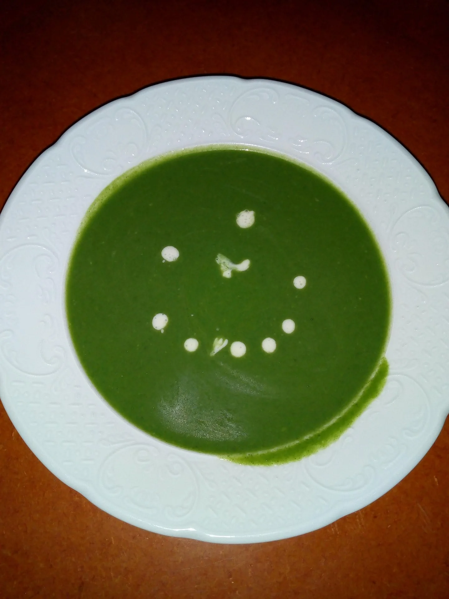
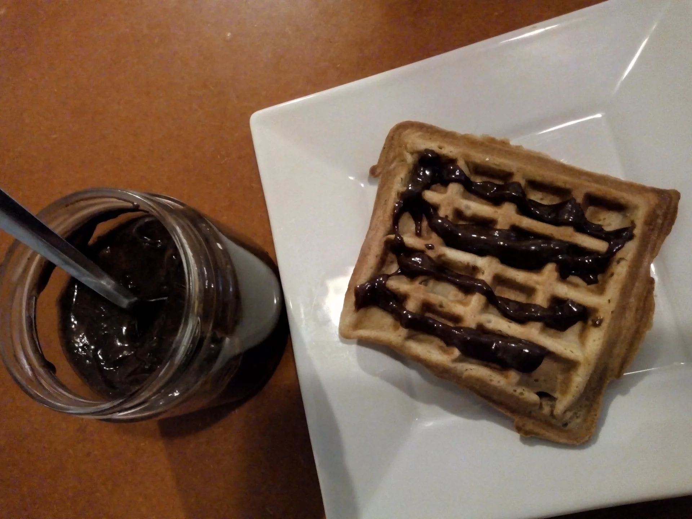
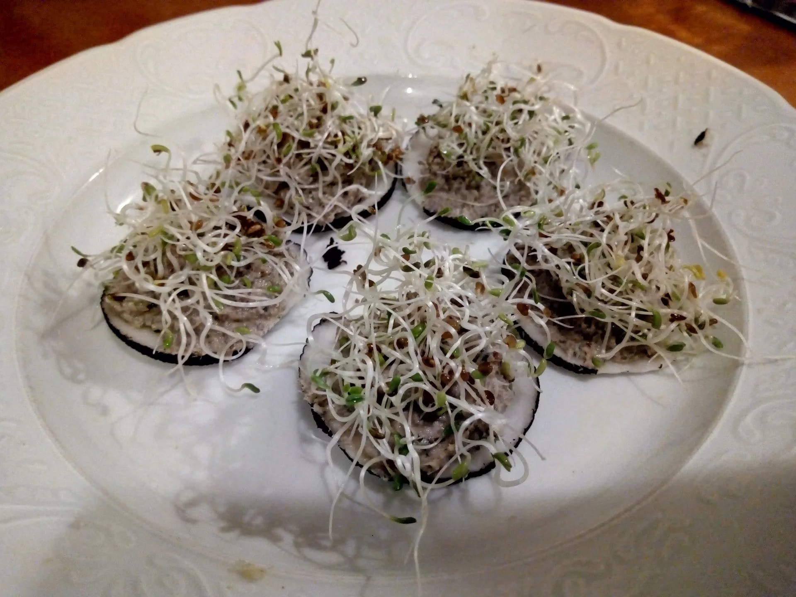

2 décembre 2023 · 2 minVersion sucrée ou salée, ce cake riche en protéines animales et végétales satisfera toute la famille
#farine de blé T80 · #farine de riz · #figues sèches · #fromage de chèvre frais · #fromage frais de chèvre
Lire l’article
20 mai 2023 · 2 minPeut se déguster froide. Sans gluten.
#échalote · #fanes de radis · #légumineuses · #petits pois · #sans gluten
Lire l’article
9 août 2022 · 1 minComment associer les aubergines et le fromage de chèvre dans un cake d'été à déguster chaud ou froid à l'apéritif ou en pique nique
#aubergine · #bicarbonate de sodium · #bûche de chèvre · #farine T80 · #herbes de Provence
Lire l’article
12 mai 2022 · 1 minPour utiliser les derniers poireaux de la saison. Ensuite vous utiliserez cette recette avec d'autres légumes, blettes, épinards, poivrons etc.
#bouillon de légumes · #flocons avoine · #fromage râpé · #muscade · #oeufs
Lire l’article
1 avril 2022 · 2 minIl fait froid! qu'à cela ne tienne, réchauffons-nous avec une soupe de pois cassés. Sans gluten!
Et comme nous sommes au printemps, nous lui ajouterons quelques fanes de radis ; c'est la saison, et notre foie adore le vert!
#carottes · #chou chinois · #clou de girofle · #fanes de radis · #laurier
Lire l’article 23 janvier 2022 · 2 min
23 janvier 2022 · 2 minUn tiramisu au mélange d'épices et miel pour se réchauffer cet hiver. Peut se faire sans gluten.
#cacao en poudre · #café · #chocolat noir · #épices · #fécule
Lire l’article
19 août 2021 · 1 minLe poivron rouge, pour les couleurs d'été, la truite pour les oméga-3
#aneth · #basilic · #ciboulette · #crème fraîche · #farine T80
Lire l’article
4 juillet 2021 · 1 minSalade d'été avec tomates anciennes, riz basmati, haricots verts, échalote nouvelle - Sans gluten -
#échalote · #haricots verts · #huile de colza · #huile olive · #riz basmati
Lire l’article 2 mai 2021 · 2 min
2 mai 2021 · 2 minEncore du vert, avec l'oseille cette fois, pour bichonner notre foie au printemps
#bicarbonate de sodium · #ciboulette · #farine T80 · #fleurs de ciboulette · #huile olive
Lire l’article
20 avril 2021 · 1 minUne soupe aux feuilles vertes, tout ce qu'il faut pour soutenir l'énergie du foie au printemps - Sans gluten -
#ail · #fanes de radis · #oignon · #Orties · #pommes de terre
Lire l’article
16 avril 2021 · 1 minAmandes, noisettes, cacao, sirop d'agave, lait d'amande, le tour est joué, et on préserve sa santé - sans gluten -
#cacao en poudre · #lait amande · #miel · #purée amande complète · #purée de noisette
Lire l’article
28 mars 2021 · 1 minComment utiliser les graines d'alfalfa que vous avez mises à germer depuis mardi - sans gluten -
#afalfa · #graines germées · #radis noir · #rillettes de sardines · #sans gluten
Lire l’article